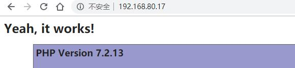

Compose介绍
Docker-Compose 是 Docker 的一种编排服务，是一个用于在Docker上定义并运行复杂应用的工具，可以让用户在集群中部署分布式应用。
通过 Docker-Compose 用户可以很容易地用一个配置文件定义一个多容器的应用，
可以快捷高效地管理容器的启动、停止以及重启等操作，和批量管理容器，
它类似于linux下的shell脚本，基于yaml语法，在该文件里我们可以描述应用的架构，比如用什么镜像、数据卷、网络模式、监听端口等信息。
可以在一个compose文件中定义一个多容器的应用（比如jumpserver），然后通过该compose来启动这个应用
Docker-Compose 解决了容器与容器之间如何管理编排的问题

Compose 中有两个重要的概念：
服务 (service) ：一个应用的容器，实际上可以包括若干运行相同镜像的容器实例。
项目 (project) ：由一组关联的应用容器组成的一个完整业务单元，在docker-compose.yml 文件中定义。
Compose安装
安装，从官网获取
curl -L "https://github.com/docker/compose/releases/download/1.23.2/docker-compose-$(uname -s)-$(uname -m)" -o /usr/local/bin/docker-compose
chmod +x /usr/local/bin/docker-compose
compose管理命令
Compose具有管理应用程序整个生命周期的命令：
启动，停止和重建服务
查看正在运行的服务的状态
流式传输运行服务的日志输出
在服务上运行一次性命令
须在工作目录执行命令

查看帮助
docker-compose --help
-f #用于指定配置文件
-p #用于指定项目名称
docker-compose 运行时是需要指定service名称，可以同时指定多个，也可以不指定。不指定时默认就是对配置文件中所有的service执行命令。
用来创建或重新创建服务使用的镜像
docker-compose build [service_name]
创建一个镜像名叫service_a
docker-compose build service_a
用于通过容器发送SIGKILL信号强行停止服务
docker-compose kill [service_name]
显示service的日志信息
docker-compose logs [service_name]
暂停/恢复服务
docker-compose pause/unpause [service_name]
用于查看服务中的端口与物理机的映射关系
docker-compose port [service_name]
查看服务中80端口映射到物理机上的那个端口
docker-compose port [service_name] 80
用于显示当前项目下的容器
dokcer-compose ps [service_name]
注意，此命令与docker ps不同作用，此命令会显示停止后的容器（状态为Exited），只征对某个项目。
用于拉取服务依赖的镜像
docker-compose pull [service_name]
用于重启某个服务中的所有容器
docker-compose restart [service_name]
只有正在运行的服务可以使用重启命令，停止的服务是不可以重启
删除停止的服务（服务里的容器）
docker-compose rm [service_name]
-f #强制删除
-v #删除与容器相关的卷（volumes）
docker-compose run
用于在服务中运行一个一次性的命令。这个命令会新建一个容器，它的配置和srvice的配置相同。
但两者之间还是有两点不同之处
1、run指定的命令会直接覆盖掉service配置中指定的命令
2、run命令启动的容器不会创建在service配置中指定的端口，如果需要指定使用--service-ports指定
启动/停止某个服务的所有容器
docker-compose start/stop [service_name]
docker-compose scale [SERVICE=NUM...]
t, --timeout TIMEOUT (default: 10s)
指定某个服务启动的容器个数
docker-compose scale web=2 worker=3
配置文件实例
实现wordpress
新建一个compose工作目录
mkdir compose/wordpress -p
cd compose/wordpress
vim docker-compose.yml
version:'3' #compose配置文件的版本。（注意不是docker的版本，也不是compose程序的版本）
services: #定义服务（每一个子项就是一种服务，每种服务可以生成多个容器）
wordpress: #服务的名字叫wordpress
depends_on: #wordpress 依赖的服务
- db
image: wordpress:latest #使用的镜像文件是wordpress:latest
volumes: #定义存储卷
- wordpress_files:/var/www/html #卷挂载路径设置。可以设置宿主机路径 （HOST:CONTAINER） 或加上访问模式（HOST:CONTAINER:ro）
ports: #端口映射
- "8080:80" #将宿主机的8080映射到容器的80
restart: always
environment: #wordpress服务启动时，需要传递的参数
WORDPRESS_DB_HOST: db:3306 #指明数据库主机地址和端口
WORDPRESS_DB_NAME: wpdb #数据库中使用的数据库名为wpdb
WORDPRESS_DB_USER: wpuser #能够使用wpdb数据库的用户名
WORDPRESS_DB_PASSWORD: wppass #wpuser用户的密码
db: #第二个服务的名字叫做db
image: mysql:5.7 #使用的镜像文件是mysql:5.7
volumes:
- db_data:/var/lib/mysql #使用的存储卷
restart: always #重启设置，有问题就重启
environment: #启动db服务时传递的参数
MYSQL_ROOT_PASSWORD: magedu #数据库使用的密码magedu
MYSQL_DATABASE: wpdb #启动容器时创建wpdb数据库
MYSQL_USER: wpuser #创建wpuser用户
MYSQL_PASSWORD: wppass #为wpuser用户设定的密码
volumes: #宿主机对应的卷
wordpress_files: #没有值，默认会创建，也可以指定
db_data:
测试

php连接数据库
宿主机IP为 192.168.80.17
新建一个compose工作目录
mkdir compose/php
cd compose/php
创建yml文件
vim docker.yml
version: "3"
services:
web:
container_name: web
image: php:7.2-apache
environment:
- ALLOW_OVERRIDE=true
ports:
- "80:80"
links:
- db
volumes:
- ./app:/var/www/html/
db:
image: mariadb
container_name: mariadb
restart: always
volumes:
- ./mysql:/var/lib/mysql
environment:
MYSQL_ROOT_PASSWORD: root
MYSQL_USER: admin
MYSQL_PASSWORD: test
MYSQL_DATABASE: database
ports:
- "3306:3306"
在宿主机创建测试页，
cat app/index.php
<?php
echo '<h1>Yeah, it works!<h1>';
phpinfo();
?>
宿主机目录列表
[root@test php]# tree
.
├── docker-compose.yml
├── mysql
└── app
└── index.php
启动容器
docker-compose -f docker.yml up -d

使用Docker-Compose部署nginx代理Tomcat集群,实现负载均衡
大体步骤分为以下四步
1、下载所需的文件tomcat,jdk
2、编写dockerfile来布署tomcat与java环境，生成镜像文件
3、编写docker-compose.yml配置文件，启动所有容器服务
4、测试负载均衡